In China Employee Termination: Pulse Control-Checkpoint Brief for Foreign Employers (2026 Hourly Run)
Key takeaways
- Foreign employers improve China termination outcomes by enforcing clear checkpoints before each major action.
- Stage-gate control reduces the most common failure pattern: legal/HR/payroll moving at different speeds.
- The highest avoidable risk still comes from mismatched route, evidence, communication, and settlement logic.
- Payroll and IIT assumptions should be cleared before employee-facing communication.
- Legal depth supports confidence, but checkpoint discipline preserves execution quality.
Pulse opener: sequence is a risk control
Cross-border teams often focus on “what” to do in China termination cases but underestimate “when” each control should happen. If controls are done out of order, contradictions appear even when each function did good work. A checkpoint model solves this by forcing critical controls to be completed in sequence.
This run rotates to a control-checkpoint format designed for foreign operators who need practical release discipline, not only legal interpretation.
Plain-language legal context first
China termination decisions are generally route-based under labor law and implementation regulations. In disputes, review often centers on coherence: whether the employer’s records and actions align with the route it claims to follow.
For foreign teams, coherent sequencing is therefore part of legal defensibility, not just project management hygiene.
Control checkpoints: four gates before safe closure
Checkpoint 1 — Pre-approval gate
Goal: confirm legal route and evidence basis before any downstream drafting.
Required pass items:
- route-confidence memo approved,
- evidence index with owner/source/status,
- unresolved assumptions listed explicitly.
If fail: pause and resolve route/evidence gaps; no communication drafting.
Checkpoint 2 — Pre-communication gate
Goal: ensure HR and legal narrative coherence before any employee-facing message.
Required pass items:
- single approved communication baseline,
- manager-script boundaries documented,
- approval timestamps captured.
If fail: freeze communications and reconcile language.
Checkpoint 3 — Pre-settlement gate
Goal: confirm settlement, IIT, and social insurance assumptions before payroll execution.
Required pass items:
- payroll/legal joint sign-off,
- settlement worksheet validated,
- timing/cutoff impacts recorded.
If fail: hold release and resolve settlement treatment conflicts.
Checkpoint 4 — Pre-closure gate
Goal: confirm archive retrievability and governance completeness after execution.
Required pass items:
- retrieval test passed,
- closure owner sign-off,
- incident/exception log closed.
If fail: reopen closure state and remediate archive gaps.
Checkpoint scoring for release confidence
To make checkpoint decisions more consistent across teams, assign each checkpoint a simple score: Pass (2), Conditional (1), Fail (0). With four checkpoints, total score ranges from 0 to 8.
- 7-8: release-ready with normal monitoring.
- 5-6: conditional release only if remaining items have named owner/date.
- 3-4: pause and remediate before any release action.
- 0-2: escalate to senior governance with explicit risk acceptance required.
This scoring approach helps foreign operators compare readiness across multiple active cases without losing detail from underlying control items.
Cross-border handoff protocol
Checkpoint models fail when handoffs are informal. Each handoff between legal, HR, payroll, and local teams should include five mandatory fields: current checkpoint status, open gaps, owner, deadline, and release-block flag. Without these fields, teams can believe a case is advancing while hidden gaps remain unresolved.
A simple handoff template can materially reduce errors:
- Case ID + checkpoint stage
- Open item summary (one line each)
- Owner + deadline
- Escalation trigger if missed
- Latest approval timestamp
For foreign teams working across time zones, this lightweight protocol improves continuity and reduces duplicated reviews.
Executive dashboard and threshold governance
Leadership should track checkpoint performance through a compact dashboard:
- First-pass checkpoint pass rate
- Average time to clear failed checkpoints
- Override frequency by checkpoint
- Repeat failure categories by function/location
Threshold policy should be explicit: any Fail at pre-settlement or pre-closure blocks release by default unless executive override is documented. This keeps exception handling disciplined and prevents schedule pressure from weakening control quality.
Practical implications for foreign operators
Checkpoint discipline helps global teams avoid “last-minute surprise” risk. It also improves reporting because leadership can see exactly where a case is blocked and why. For distributed teams, stage-gates provide a shared timing language that prevents cross-time-zone drift.
Operations module
A) SOP by role ownership
Legal: own pre-approval route integrity and assumption clarity.
HR: own pre-communication narrative coherence and script controls.
Payroll: own pre-settlement treatment validation and timing readiness.
Manager: follow approved communication boundaries only.
Vendor/EOR: preserve handoff continuity and checkpoint status visibility.
B) Document checklist and checkpoint gates
Required artifact set:
- route-confidence memo,
- evidence index,
- communication baseline,
- settlement worksheet + tax notes,
- timestamped approvals,
- closure retrieval record.
Gate rules:
- no progression if current checkpoint fails,
- each failed gate requires owner/date remediation,
- checkpoint overrides require documented justification.
C) Exception pathways
Pathway A: pre-approval fail → legal reset and evidence completion.
Pathway B: pre-communication fail → narrative reconciliation hold.
Pathway C: pre-settlement fail → payroll/legal escalation and hold.
Pathway D: pre-closure fail → reopen and remediate retrievability.
D) System controls and audit fields
Suggested fields:
checkpoint_pre_approvalcheckpoint_pre_communicationcheckpoint_pre_settlementcheckpoint_pre_closurecheckpoint_ownercheckpoint_deadlineoverride_reason
Control standards:
- hard-stop on failed checkpoints,
- immutable logs for gate changes/overrides,
- monthly review of checkpoint failure recurrence by function.
Common mistakes and prevention
Mistake: drafting communications before route is stable
Prevention: enforce pre-approval gate completion first.
Mistake: settling payroll assumptions too late
Prevention: make pre-settlement a mandatory release predecessor.
Mistake: closure treated as admin cleanup
Prevention: require pre-closure retrieval pass before final close.
Mistake: repeated checkpoint failures ignored
Prevention: track recurrence and redesign process at source.
Mistake: override without accountability
Prevention: require owner, reason, and deadline for all overrides.
What to watch next
Foreign operators should track which checkpoint fails most frequently and where failures concentrate. Persistent concentration usually indicates workflow design gaps, not isolated case variance. Shorter time-to-clear failed checkpoints is a strong signal of operational maturity.
Checkpoint governance cadence
A practical cadence is daily for active high-risk cases, weekly for standard case review, and monthly for trend analysis. Daily cadence catches urgent gate failures early. Monthly cadence identifies structural recurrence and training needs.
FAQ
Is this checkpoint model legal advice?
No. It is an operational control framework informed by legal and practitioner sources.
Can small teams apply this model?
Yes. Even simplified gate tracking improves consistency.
Which checkpoint is most commonly missed?
Pre-settlement and pre-closure are often under-enforced.
Does this replace local counsel?
No. It complements local legal/payroll advice with sequencing controls.
Is this model uniform across China cities?
Baseline checkpoint logic is broad, but local practice differences still matter.
What KPI should leaders track first?
First-pass checkpoint pass rate and time-to-clear failed gates.
Legal appendix (secondary depth)
1) Core legal anchors
The PRC Labor Contract Law and implementation regulations provide statutory basis for termination routes and obligations. SPC interpretations provide labor-dispute application context.
2) Practitioner and market synthesis
Practitioner guidance emphasizes route-process coherence. Market/payroll context reinforces settlement/tax handling as risk-sensitive execution domains.
3) Residual uncertainty
City-level variance and language nuance can affect edge-case outcomes; high-exposure cases should involve localized professional advice.
Source-fit note for this run
This run maintained required source mix and rotated to a control-checkpoint structure for better sequence discipline. Repetitive assurance-grid language was replaced with stage-gate release logic.
Disclaimer
This content is informational only and does not constitute legal, tax, payroll, accounting, or compliance advice. Employers should seek qualified local professional advice for case-specific decisions.
Sources
- National People's Congress. Labor Contract Law of the PRC (English text). Accessed 2026-02-28: http://www.npc.gov.cn/zgrdw/englishnpc/Law/2007-12/13/content_1384064.htm
- State Council. Implementation Regulations of the Labor Contract Law (Decree No. 535). Accessed 2026-02-28: https://www.gov.cn/gongbao/content/2008/content_1124615.htm
- Supreme People's Court. Interpretation (I) on Application of Labor Dispute Law. Accessed 2026-02-28: https://www.court.gov.cn/fabu/xiangqing/243981.html
- China Briefing. Employee Termination in China. Updated 2025-10-17, accessed 2026-02-28: https://www.china-briefing.com/news/employee-termination-in-china/
- Littler. Key Recent Developments in China's Employment Law. Published 2024-03-20, accessed 2026-02-28: https://www.littler.com/news-analysis/asap/key-recent-developments-chinas-employment-law-china-us-comparative-perspective
- PwC. PRC Individual Taxes on Personal Income (Tax Summaries). Accessed 2026-02-28: https://taxsummaries.pwc.com/peoples-republic-of-china/individual/taxes-on-personal-income
Need local employment support in China?
If you need a compliance-first partner for hiring, payroll, and risk controls in China, China-Payroll.com can help evaluate the right setup.
Image Prompt Pack
Create a 16:9 hero image for article title: 'In China Employee Termination: Pulse Control-Checkpoint Brief for Foreign Employers (2026 Hourly Run)'. Scene: global operations team evaluating workforce model options for China market entry. Include motifs: decisi…